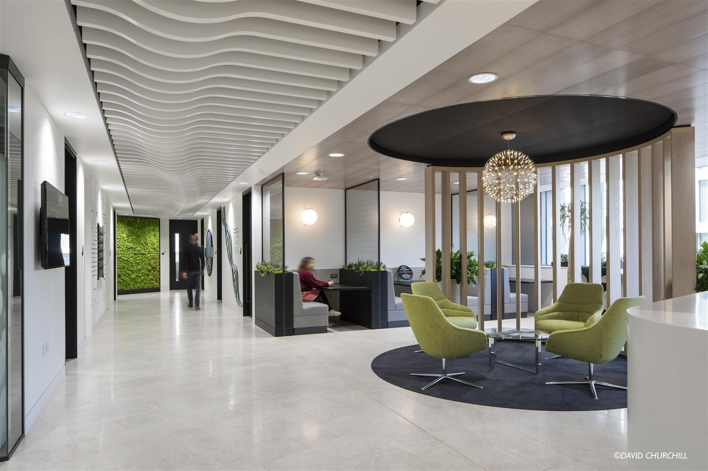

I have had a diverse professional journey that has ultimately led me to the world of programming and software development. With a background in project management and experience as a Scrum Master at a property tech company, I've spent the last year and a half mastering the art of efficient collaboration and delivery. My career path has been a unique one, spanning across various roles, including customer service, administration, and even a fulfilling role as a play worker at a nursery. While I hold a degree in Criminology, my true passion lies in the dynamic and ever-evolving world of technology. From an early age, I've been captivated by the latest gadgets and gaming, and I find endless fascination in all things tech. Software development, in particular, has become my canvas for creative expression, enabling me to transform ideas into tangible, interactive solutions. I'm thrilled to embark on this coding and web development journey, where I can combine my love for technology with the joy of creating something new and impactful. Let's explore this exciting world of software development together!
My journey with technology began at a young age when I first started tinkering with computers and gadgets. From fixing the "red ring of death" on my Xbox 360 to installing all kinds of software on my first smartphone to add more customisation options.
I started my career in an administration role at Deloitte, I enjoyed this role, but it was only a gap year opportunity after finishing my A-levels.
At this point in my life I was unsure of what I wanted to do for a career, and not having taken many tech-related subjects through my school years, I opted for a degree that I was comfortable completing, a Criminology degree.
It was during my time at university that I realised I wanted to learn to code and so I signed up to Codecademy in my final year. I started my coding journey by doing a beginners course in C++ before taking a break from coding to become a Scrum Master after university.
My first job in the tech industry was at a company called Yuno. It was here that I really awakened my passion for software development. Being a key part of the development process and having a close relationship with the developers was instrumental for me. I learnt a lot from the devs here and this is what sparked me to begin learning Javascript. Throughout my time at Yuno I continued learning to code on Codecademy, spemding many hours after work learning.